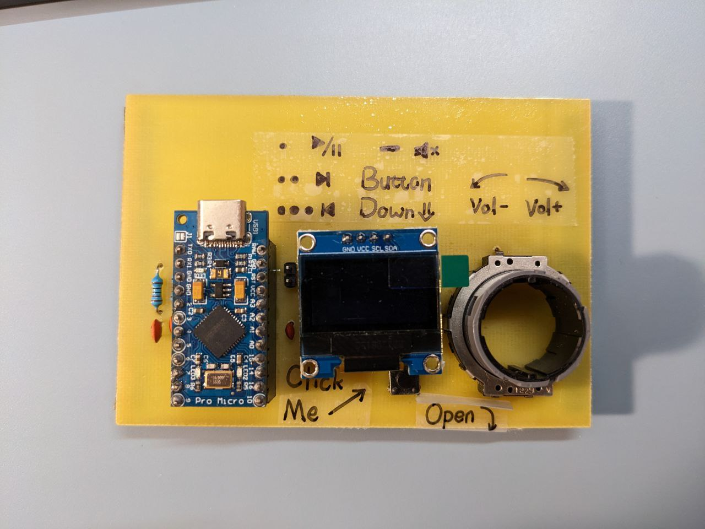

Project Concept/Motivation
I would like to make a smart knob that displays and controls my PC's volume.
Anticipated Bill of Materials
-
Arduino
-
LCD display
-
Buttons
-
Resistors
-
Rotary Encoder
-
Wires
-
Materials for a housing
Timeline and Contingency Plans
-
By March 1, finish the code
-
By March 3, finish the housing
-
By March 5, finish the installment
-
By March 8, finish the documentation
-
If anything goes wrong, delay it by 2 days max
A smart knob is designed to allow PC users to quickly check and adjust their PC's volumn. A rotary encoder is used to detect the user's scrolling actions. It is also equipped with an OLED screen that displays information about the current volume level or multimedia actions. The knob is also designed with a multimedia button that can be used to play, pause, mute, or skip through music or videos.
The smart knob is a convenient and efficient way to adjust the volume of your PC without having to use your mouse or keyboard. It provides a tactile and intuitive interface that allows for quick and precise adjustments, making it ideal for both casual users and competitive gamers who need to fully focus on their screens. With its geeky design, the smart knob is a stylish addition to any desk setup.
Actual Bill of Materials
Bill of Materials
| Amount |
MN (manufacturer number) |
MPN (manufacturer part number) |
| 1 |
Arduino Pro Micro |
type Arduino Pro Micro (Clone); variant type-c |
| 1 |
Ceramic Capacitor |
package 100 mil [THT, multilayer]; voltage 10V; capacitance 22pF |
| 2 |
Ceramic Capacitor |
package 100 mil [THT, multilayer]; voltage 35V; capacitance 100nF |
| 1 |
Panasonic EVQ-V5B00215B |
package THT; |
| 1 |
Generic female header - 2 pins |
package THT; pins 2; pin spacing 0.1in (2.54mm); form ♀ (female); hole size 1.0mm,0.508mm; row single |
| 1 |
OLED 128x64 I2C Monochrome Display |
variant variant 1 |
| 2 |
5.1k Ohm Resistor |
package 1206 [SMD]; tolerance ±5%; resistance 5.1k Ohm; power 0.25 |
| 1 |
1k Ohm Resistor |
package 1206 [SMD]; tolerance ±5%; resistance 1k Ohm; power 0.25 |
| 2 |
10k Ohm Resistor |
package 1206 [SMD]; tolerance ±5%; resistance 10k Ohm; power 0.25W |
| 2 |
10k Ohm Resistor |
package THT; tolerance ±5%; pin spacing 400 mil; resistance 10k Ohm; bands 5; power 0.25 |
| 1 |
Pushbutton |
switch status Released; package [THT] |
Why Arduino Pro Micro
I chose to use the Arduino pro micro as my microcontroller. The Arduino Pro Micro is a compact and versatile microcontroller board that is ideal for a wide range of projects. Its small size, roughly the size of a standard USB flash drive, makes it easy to integrate into my smart knob project where space is limited. The board features a USB-C port, which allows for fast and reliable data transfer and also provides power to the board. So I don't have to worry about making about USB module in my design.
One of the key benefits of the Arduino Pro Micro is its ability to act as a USB HID (Human Interface Device). This means that it can be used to emulate a keyboard, mouse, or another input device, allowing it to control other devices or software applications. This feature makes the board particularly useful for me as I need it to act as a keyboard to send media commands like "volume up", "volume down", "mute", and so on.
In addition to its USB HID capabilities, the Arduino Pro Micro also has a wide range of inputs and outputs, including digital and analog pins, PWM outputs, and serial communication ports. This makes it a versatile and adaptable platform that allows me to attach any peripherals to it without worrying about running out of pins.
Overall, the Arduino Pro Micro is a powerful and flexible microcontroller board that is ideal for my smart knob project where space is limited and USB HID functionality is required.
My schematic is similar to my assignment 4, which also features the Arduino, an OLED screen, a button, and a rotary encoder. However, there are also a couple of differences. The biggest change is the MCU, which I changed from an Arduino UNO to an Arduino Pro Micro Type-C. Since it’s a different board, the wiring changed. The IIC bus is on pin 2 and pin 3 for the Arduino Pro Micro. They are connected, instead of the A4 and A5 on the UNO, to the OLED screen, along with two 5.1K Ohm pull-up resistors. Another change is that a Panasonic EVQ-V5B00215B hollow rotary encoder replaced the rotary encoder module included in the kit. According to its datasheet, I included 4 * 10k Ohm resistors and 2 * 0.01uF capacitors to allow it to properly function. There's also a 22pF capacitor between the VCC and the GND pin to ease out spikes in currents.
Better Power Supply
The IIC bus communicates rapidly with the arduino, if there are noise, sometimes the Arduino behaves weirdly or freezes. To compensate for that,
I put a 22pF capacitor between the power rails of the arduino, the capacitors can ease the fluctuation of the power on the breadboard.
Better I2C Bus Performance
According to the web, two 4.7k ~ 10k Ohm resistors are required to pull-up the SCK(SCL) and SDA lines in the I2C bus. These resistors can let to better performance and more resistance to noises. I chose two 5.1k Ohm resistors that are available in the kit.
Circuit
Above the blueprint

The above image shows the actual Arduino circuit build on a etched PCB. There are instructions on the top. Protections for the PCB are installed in the bottom.
Making the PCB
Engineering Fun
To make the project more fun, I decided to home made the PCB from scratch. Some more detailed tutorials:
But here's my steps and some tips (a cheaper, more home-approachable version)
Materials Used
- Single sided copper plate
- Ferric Chloride Copper Etchant Solution
- Hydrogen Peroxide Topical Solution
- Photosensitive film
- Washing soda
- UV light
- Small hand drill
- 1000# sand paper
- Materials for the circuit
General Steps
- Design the PCB
- Protect the routes on copper Plate
- Remove the copper
- Remove the protective film
- Prepare for Soldering
Design the PCB
I use fritzing to design the PCB, it is a once free electronic designing app for hobbyists. I've been using it for a few years and it has good compatibility with Arduino parts. I iterated my PCB with several versions and the final one is like this
Print the Design
- Print it mirrored, so it can cover the copper surface and eventually give out the correct result
- Use high-quality exports, get the highest DPI / resolution possible
- Use high-quality printers and print papers, check it the traces are straight
Protect the Routes on the Copper Plate
There are two ways to do this, toner transfer method and the photosensitive method. Due to my limitations to simple equipment and school printers, I have to choose photosensitive method, which is more complex but has higher resolution.
Prepare the Copper Plate
- Sand the copper surface to remove the oxidized layer
- First peel off the plastic film on the photosensitive film. Only peel off one side
- Carefully stick the peeled off side onto the copper surface
- Gently heat the copper surface to make the film stick tightly to it, I use my stove top and heat level 2-4 to achieve that
- Carefully peel off the other protective film
Transfer the Routes
- Spray some oil onto the film
- Carefully cover the printed circuit onto the film, make sure the oil fully covered the surface and the print
- Shine UV light on the surface, test beforehand to determine the best time frame (30 min for my setup)
- Remove the print and wash the board with soapy water
Remove the Copper
- Add water, some washing soda, and a little bit of hydrogen peroxide into a bowl, put the copper plate into it. Area outside the route should start fading quickly. Shake to facilitate process.
- After all light areas are removed, carefully inspect the route, if any of them is broken, use a permanent marker pen to restore it. The marker has the same function as the protective film.
- Put the plate into ferric chloride solution, shake carefully, the copper should start fading.
- Shake until all the copper outside the routes are dissolved.
Remove Protective Film
- Use pure hydrogen peroxide solution, put the plate in.
- Darkened routes should dissolve in solution
Prepare for Soldering
- Sand the routes well, remove the oxidized layer.
- Put rosin around the soldering points, use iron to melt it. Tin should stick to the points.
- Ready for parts now
Tips
- Carefully check the printed PCB, is the size all correct? Are traces correctly connected?
- Always use rubber gloves, proceed in well ventilated areas
- Dispose solution with care
- Use high quality solder iron and tin, tip tinner is a great helper